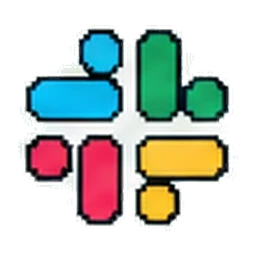
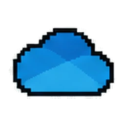
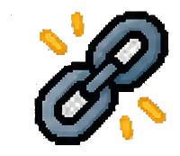

Communication
Give each request, decision, and handoff a visible owner and place to live.
Learning Operations + Workflow Design
Learning work depends on connected requests, reviews, files, launch steps, and updates. I design those handoffs so teams can see what happens next and keep the work usable over time.
Why this belongs in my portfolio
Courses and resources only help when people can request them, build them, review them, find them, and update them. Workflow design is the foundation that keeps those actions coordinated.
Give each request, decision, and handoff a visible owner and place to live.
Connect source material, production tasks, SME review, and launch timing.
Retain approved files, version context, support guidance, and follow-up.
01 · Digital Workplace Ecosystems
A request can begin in a message, become a shared plan, move through review, and end as a findable learning resource. Explore one fictional training launch in Microsoft 365 or Google Workspace.
The request becomes visible work before production starts.
Keep the approved brief and current file in one shared location; chat points people to it rather than becoming the only record.

Teams or Slack channels can carry cohort prompts, reminders, and questions without becoming the only decision record.
A configured Teams tab or Viva Learning source can bring approved learning into daily work; the LMS remains the record source where applicable.

OneDrive drafts, SharePoint libraries, and Google shared drives serve different ownership and access needs.
02 · Work Management
Course production crosses instructional design, SMEs, media, and launch teams. A useful board shows what is ready, what is blocked, and what a reviewer needs to decide.
The request is scoped before production tasks receive owners and dates.

My view: source files, blocked production tasks, and the next review decision.
03 · Articulate Review 360
I have used Review 360 for contextual feedback and Asana for change ownership. This fictional lesson shows how comments become decisions, edits, and a checked final version.
A contextual comment becomes an assigned change, then returns for confirmation before resolution.